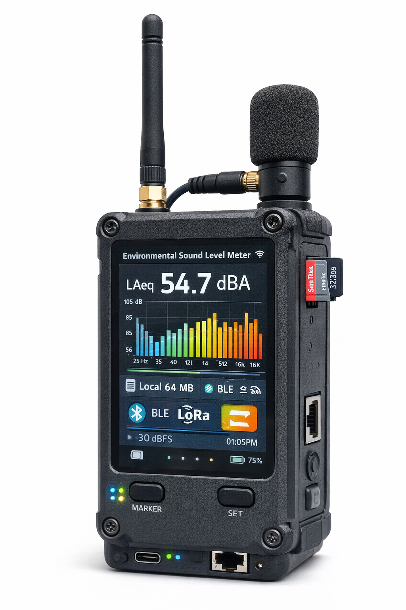
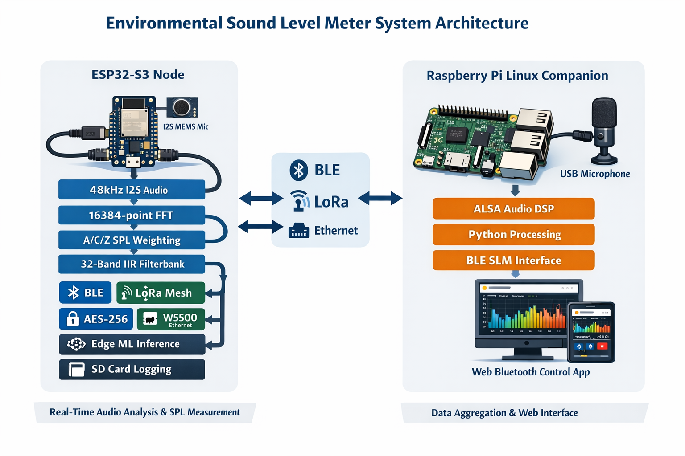

A dual-platform environmental sound level meter built on ESP32-S3 and Raspberry Pi. Real-time 48kHz I2S audio capture with 16384-point FFT, A/C/Z-weighted SPL, 32-band IIR filterbank, BLE provisioning, LoRa mesh networking, professional reference meter integration, Edge Impulse ML inference, and a full Raspberry Pi Linux companion with ALSA audio capture, Python DSP, and a Web Bluetooth control webapp.

The ESP32-S3 captures 48kHz 32-bit audio from an I2S MEMS microphone and pushes samples through a multi-stage DSP pipeline running across dedicated FreeRTOS tasks pinned to specific cores. The I2S read task runs at the highest priority on Core 1, feeding a queue to the FFT processor which performs a 16384-point real FFT (via Espressif's esp-dsp library), computes the power spectrum, applies A/C/Z frequency weighting curves, and calculates SPL values with FAST and SLOW exponential moving averages.
A 32-band split-rate IIR filterbank computes 1/3-octave energy from 12.5 Hz to 16 kHz - 28 bands processed at a decimated 16kHz rate and 4 bands at the native 48kHz rate for efficiency. The filterbank uses second-order sections (SOS) with pre-computed coefficients. Calibration against a 94 dB SPL reference tone at 1kHz is supported with automatic tone detection within a ±50 Hz tolerance window.
Results are dispatched simultaneously to multiple outputs: USB serial (structured CSV protocol for the Pi companion), BLE (live SPL and spectrum streaming via NimBLE GATT), LoRa mesh (AES-256 encrypted measurement packets with mesh routing for multi-hop relay across remote sites), and WiFi. The BLE stack exposes 4 GATT services with 50+ characteristics covering device provisioning, measurement control, live data streaming, and system management.
A custom W5500 Ethernet driver (with SPI stability fixes and automatic socket recovery) connects to a professional reference sound level meter via its HTTP/JSON REST API over a link-local Ethernet connection - reading calibrated measurement data and aligning timestamps using EWMA clock offset correction.

The Raspberry Pi runs a full Python companion application that operates in two modes: as a gateway aggregating data from ESP32 nodes over USB serial, or as a standalone SLM capturing audio directly from a USB microphone via ALSA. The Pi audio module scans ALSA devices (arecord -l), supports runtime device switching, and processes audio through a Python implementation of the same split-rate 1/3-octave filterbank running on the ESP32.
The Pi also acts as a BLE peripheral - mirroring the ESP32's GATT service structure so the same Web Bluetooth webapp can control either platform seamlessly. A WiFi manager handles network configuration, and a built-in HTTP server serves the control webapp locally. The webapp itself is a monolithic single-page application using the Web Bluetooth API for BLE connection, with device detection logic that adapts the UI based on whether it's connected to an ESP32 or a Raspberry Pi (enabling audio device selection and disk recording on Pi, LoRa and reference meter controls on ESP32).
An Edge Impulse machine learning model runs inference directly on the ESP32-S3, using Espressif's esp-nn library for neural network acceleration. Audio is decimated to 16kHz and fed to the classifier in real-time. The system also records calibration-normalized WAV files and CSV measurement logs to an SDIO 4-bit SD card, with gain adjustment so 94 dB SPL maps to -20 dBFS in recordings. Power loss detection triggers graceful shutdown to protect in-progress recordings and file system integrity. The ESP-IDF devcontainer provides a reproducible Docker-based build environment for the firmware.